WEEK 3 (08 February 2017)
[Computer - Controlled Cutting]
In this class session me and my colleagues have designed and tested several types of Press Fit using wood, after this first job we made a personal work and I designed the tickets for an event that I usually organize known as: Sons à Sexta
( For this homework I used the Vinyl Cutter Machine and a Laser Cutter machine)
Press Fit Test:
Using laser cut machine to test several types of Press fits and also to test several types of machine parameters to notice when it appears more or less burnt:
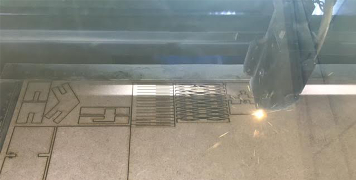
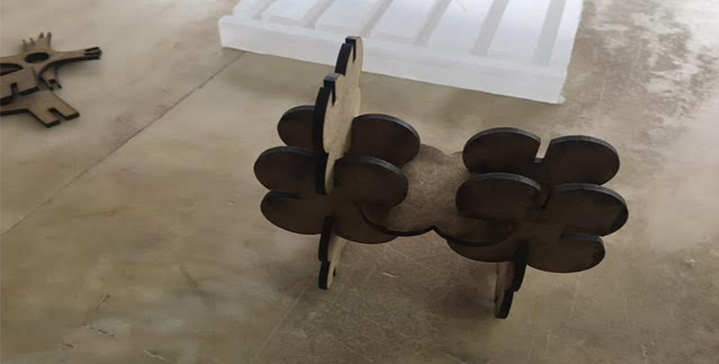
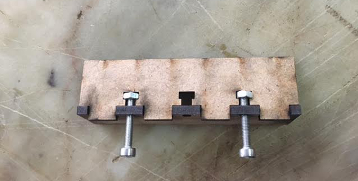
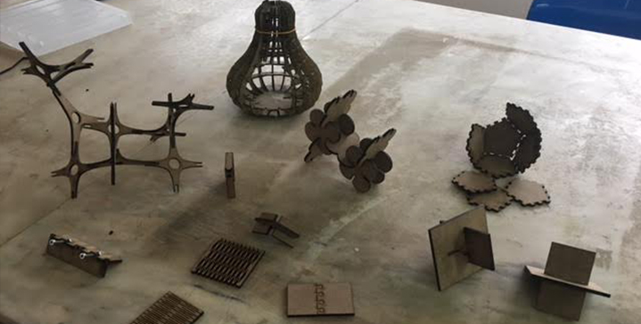
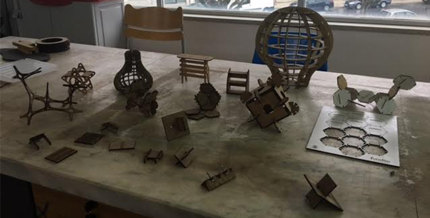
For my personal work I have designed the tickets for a concert, and with the set of 12 tickets we were able to build a press fit dodecahedron.
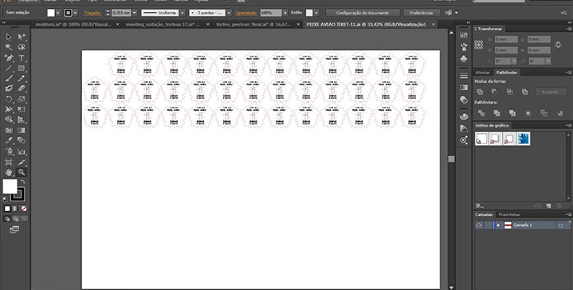
For modeling and Cading, I used the Illustrator and I also used Parametric CAD tools to obtain the vectorial drawings needed for cutting the wood. I Work with these tools on a daily basis, therefore I have a lot of experience in this type of work.
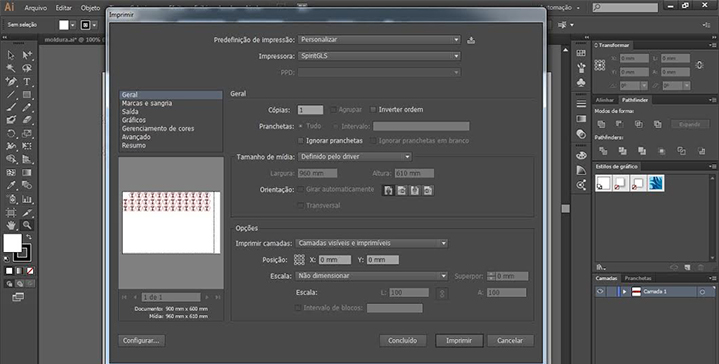
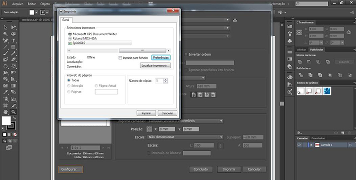
The parameters to making the object in wood were:
Black layer to ingrave thickness 0.001- Speed-60 Power-70
Red layer to cut espessura 0.001- Speed-2.5 Power-95
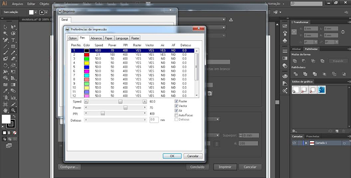
The final result was the assembly process, and the final product was a success for the audience of the concert: peixe:avião
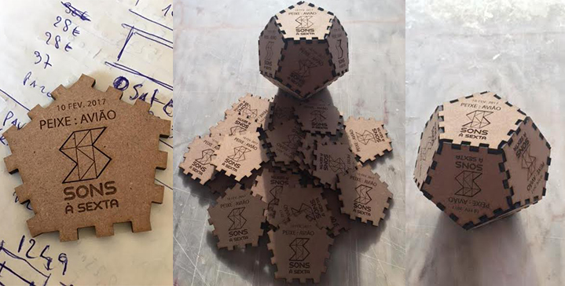
I used the Vinyl Cutter Machine to make the logo of My Final Project:
I have drew the Logo using the Illustrator tool,
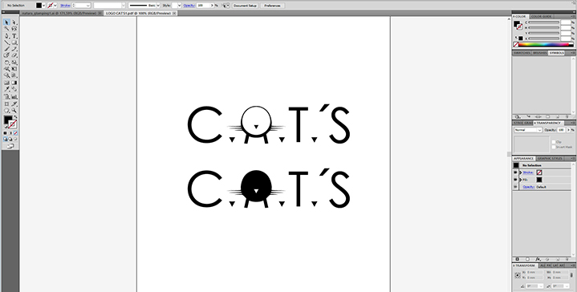
And I used black vinyl, and the Roland Vinyl Cutter to make this task.
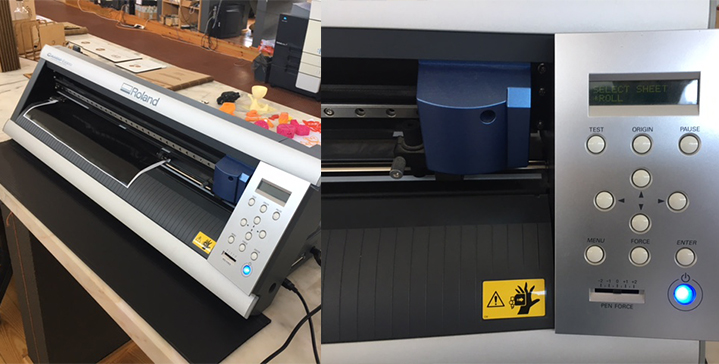
I used the Cutstudio to open the file from Illustrator in order to cut the black vinyl in the Roland cutter Machine.
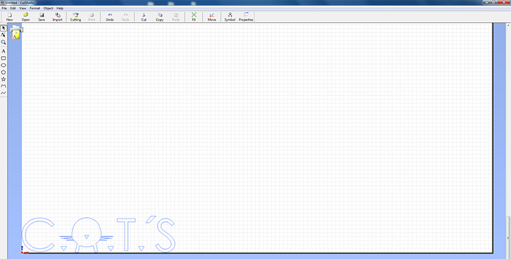
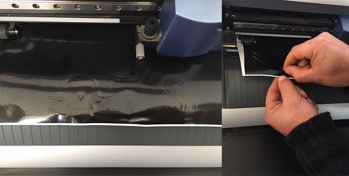
And this is the final result of my Logo, which will be used in my final project C.A.T'S Feeder
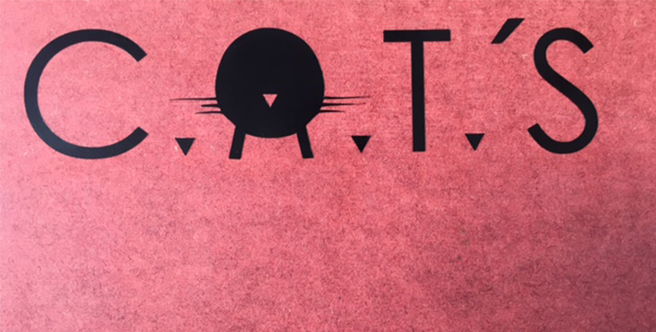
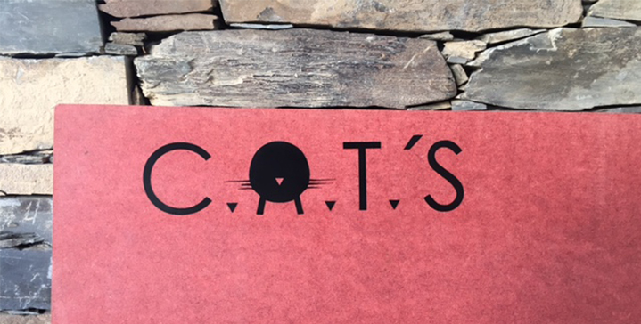